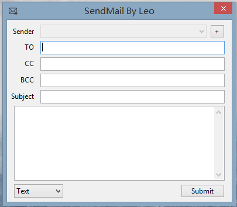
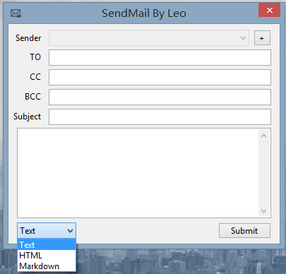
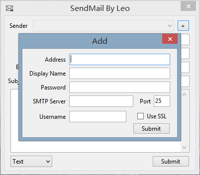

便攜的郵件發送工具
如果在使用中出現任何問題,請戳這個告訴我.
你還在為了使用那些臃腫的客戶端而煩惱嗎?你每次發送郵件都需要打開網頁登錄嗎?快來下載SendMail吧,釋放你的內存,讓發送郵件變得如此簡單.
感謝MarkdownSharp提供解析支持.
需要.Net Framework 4支持.
  
v1.0 19th Nov 2013
1. 便攜的電郵發送程式.
2. 支持基於SSL的SMTP登錄.
3. 支持發送HTML郵件.
4. 支持多個收件人.並以逗號分割.
v1.1 20th Nov 2013
1. 修復上一版本電郵發送異常.
v1.2 24th Nov 2013
1. 為程式增加一個Icon.
2. 程式可以保存最後一次登錄的用戶數據.
v1.3 25th Nov 2013
1. 支持Markdown格式的郵件.
2. 修復之前正文文本框超出時不顯示滾動條的問題.
v1.3.1 26th Nov 2013
1. 修復之前不友好的異常顯示方式.
2. Markdown可以自動換行和轉換超鏈接.